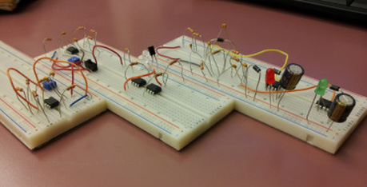
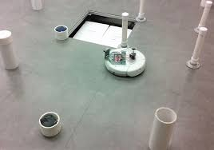
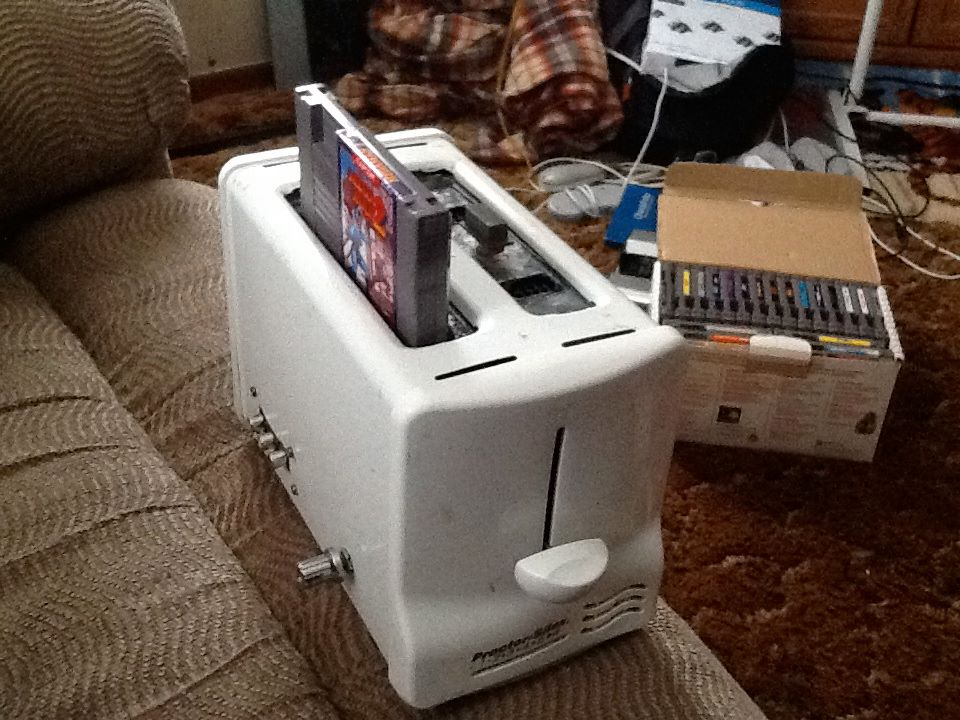

The following pages contains a wide variety of course and personal projects. Brief descriptions are provided, along with image links for better viewing.
In other words, you can click on the individual images for better resolution and dimensioning.
Infrared Light Detector

As part of EE 230, the class was given the task to create transmitter and
receiver circuits of infrared light, similar to the design to left (click to expand). The
objective was to send out a signal via a button push, which ultimately would be interpreted
as a red light. Pressing a second button would generate another signal and
interpretation, resulting in a green light emission.
Mars Rover

In Fall of 2015, I worked with a team of electrical engineering students to develop system
design code to control and operate a robot (iRobot). To carry out this task, the team
utilized the iRobot's built-in sensors as well as IR/SONAR inputs to successfully navigate
the rover through an obstacle course to reach a specified target.
Nintoaster

On a more personal side, I implemented circuit modification skills by inserting a custom
PCB design of the original Nintendo inside of a conventional toaster. LED lights were also
added to the toaster's onboard potentiometer for added lighting effect.
{kind=link}
{kind=link}
{kind=link}